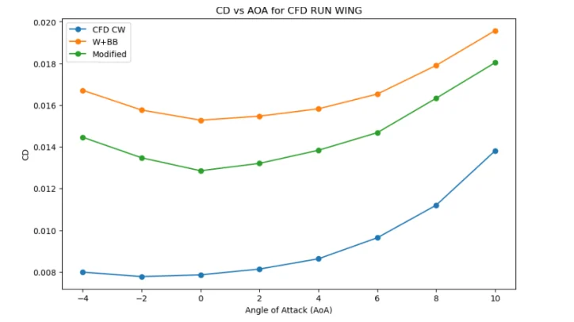
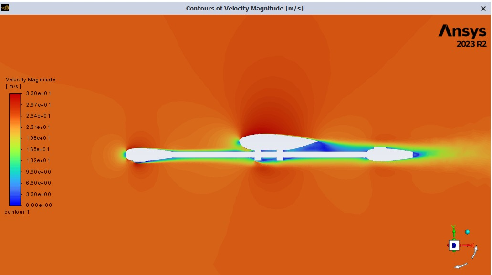
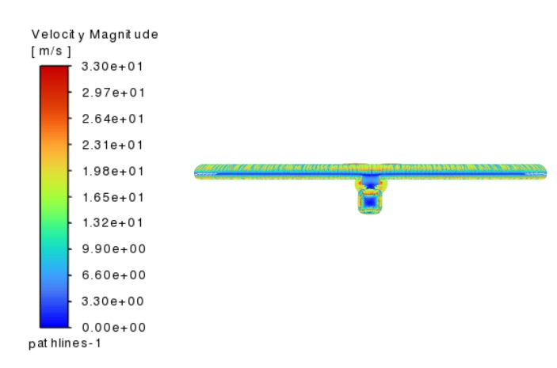

Aerospace · CFD
VTOL aerodynamic optimisation
My final-year project at Southampton, looking at how to reduce drag from VTOL wing-mounted motors and supports.

What I was trying to improve
The motor mounts and support structures increase drag on the wing. I wanted to see whether changing their shape and position would reduce that drag without affecting the lift too much.
What I did
I ran more than 25 CFD cases in ANSYS Fluent, comparing different motor-mount shapes and orientations over a range of angles of attack.


Looking at the airflow
I also compared the flow around the original and modified motor mounts. The velocity plots helped show where the mounts disturbed the flow and how that changed with the redesign.



What I found
At 0° angle of attack, my final design reduced the drag coefficient by about 15.9% compared with the earlier configuration, while maintaining a similar lift trend. I also checked the results across other angles of attack, because the improvement wasn't identical at every condition.